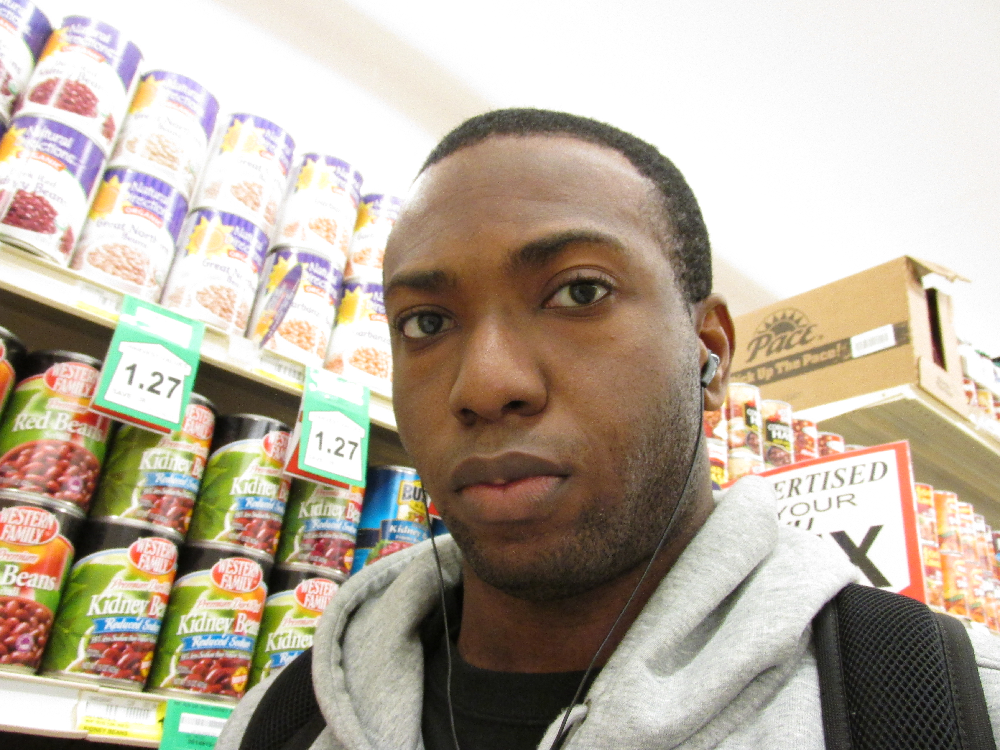

GOOGLE
I am a junior in college. I am majoring in Technical Communications and minoring in Visual Communications Design. So far, my experience at Eastern has been an okay transition. I prefer this school because of the community type of atmosphere, the school is very small compared to the other schools in washington and it's also cheaper too. That is why I chose it. I have about a year and a half left in this school and I want to be able to finish as soon as I can. So far I think the Technical Communications program is a very good program to be in. I am also currently working with the school newspaper, the Easterner.

In my free time I like to do whatever that intrests me. I don't really have a particular hobby. I like to listen to music, my favorite genres of music are Rap and Rock. I also like to hang out with friends when I can. I like to try to saty fit by going to the gym and I also like to play basketball as well. I like to watch sports also, my favorite sport is basketball and my favorite team is the Portland Trail Blazers. I also like to watch football, and track & field on television. I am also interested in art such as paintings and sculptures. For my future career plans I would like to go into being a technical writer, I would like to write propsals and grants for companies. I want to be able to do more reserch on the career I can get into after college. With any questions please contact me at my email address: elohinotheodore@eagles.ewu.edu. My ultimate goals are to graduate college, and to also get a job in order to start my career. I look forward to starting my internship in the fall of 2013.